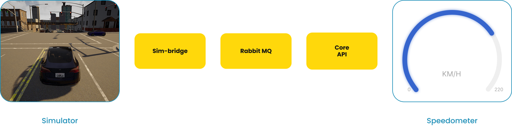
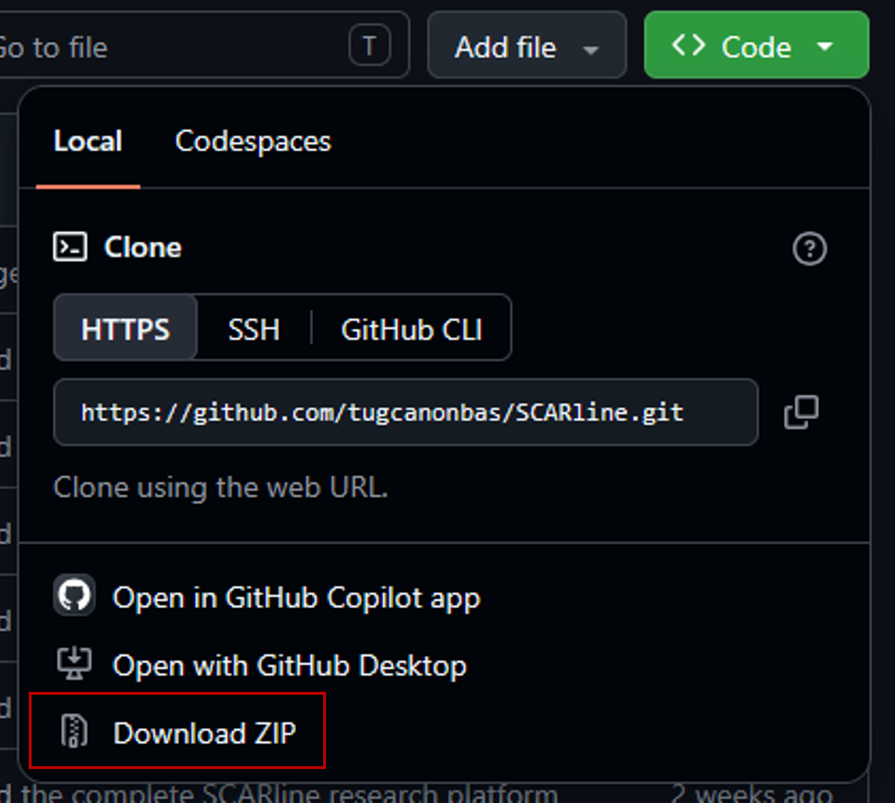

How it works
The architecture behind SCARline, how live data reaches a widget, and everything you need to build widgets and run the platform yourself.
01 • Architecture
One CLI, a set of services, a message queue
The scarline command-line tool validates the configuration, starts the Docker services and the processes that run on the host machine, and reports their health. Everything else — study design, live sessions, participant displays, simulator and sensor integration, data export — runs on top of that stack.

Design principles
-
Services talk through a queue
Backend components exchange commands and events over RabbitMQ instead of calling each other directly. A simulator or overlay can restart without disturbing study data.
-
One owner for study data
Only the Core API writes to the database. A state change and the message announcing it are saved together, so neither can get lost.
-
Configuration is snapshotted
When a session becomes ready, each condition's simulator, device and sensor settings are frozen. Completed sessions stay reproducible.
-
Transitions are confirmed
Starting, pausing or advancing a session is a command the simulator and sensor services must acknowledge. If they don't in time, the session fails cleanly instead of half-starting.
-
Widgets are plain web files
Static HTML, CSS and vanilla JavaScript, with no framework and no build step. New widgets are picked up without rebuilding anything.
-
Roles are enforced on the server
Admins, researchers, operators and observers each see and do only what their role allows, checked by the server rather than hidden in the interface.
Components
| Component | Responsibility |
|---|---|
scarline CLI | Validates configuration, generates secrets, starts and stops the stack, runs diagnostics. |
| SCARline Hub | The web app for researchers and operators: study setup, layout editor, live operation, logs and exports. |
| Core API | Accounts and roles, persistence, real-time updates, session lifecycle, trigger rules and exports. |
| Sim-Bridge | Connects simulator adapters, dispatches commands, journals results and publishes telemetry. |
| CARLA client / Mock simulator | Simulator adapters that bind to a session condition and emit vehicle and scene events. |
| I/O Client | Discovers sensor hardware, runs drivers and batches samples. |
| Overlay Web | Renders participant widgets and serves widget assets. |
| Desktop Overlay | Places widgets as transparent, display-targeted windows on the participant's screens. |
| PostgreSQL & RabbitMQ | Durable study data and the message queue between services. |
02 • Data flow
How one value reaches the screen
The simulator never talks to your widget directly. Follow a single speed reading on its way to the participant's display.

- SimulatorThe vehicle reaches 80 km/h in CARLA.
- Sim-BridgeTranslates raw simulator state into messages the rest of the system understands.
- RabbitMQHolds the message in a queue until something is ready to pick it up.
- Core APIConsumes it and packages it into the data field your widget is listening for.
- OverlayReceives it over an always-open WebSocket and updates the widget on screen.
Why a queue in the middle?
RabbitMQ acts as a buffer rather than a direct handoff. The simulator side and the widget side never depend on each other being up at the same moment, and a component that restarts mid-command replays its recorded result instead of running it twice.
Fresh, not stale
Live values reach each widget at most ten times per second. Each binding declares how long a value stays fresh; when data stops arriving, the widget shows — instead of an old number, and the operator can see why in the live session view.
03 • Widget development
Build your own widget
A widget is a folder of static files inside widgets/components/, for example widgets/components/calendar/. There is no framework and no bundler; a shared runtime script handles data binding and interactions for you.

-
index.htmlThe widget's visual structure, styled with Tailwind CSS classes.
-
widget.jsonThe manifest: name, category, size and, most importantly, the data bindings the widget expects.
-
<widget-id>.pngA preview image shown in the layout editor, so the widget is recognisable without loading it live.
Receiving live data
Give an element a data-bind attribute and declare the same key in widget.json. The runtime fills the element with live values as they arrive.
index.html
<script src="../../widget-runtime.js"></script>
<div data-scarline-widget-root>
<span data-bind="vehicle.speed"
data-format="number"
data-decimals="0">—</span>
<span data-bind="vehicle.speed_unit">km/h</span>
</div>widget.json
"bindings": {
"vehicle.speed": {
"type": "number",
"unit": "km/h",
"source": "live",
"staleAfterMs": 5000,
"preview": 132
},
"vehicle.speed_unit": {
"type": "string",
"default": "km/h",
"source": "presentation"
}
}| Binding field | Meaning |
|---|---|
type | number, string, boolean, object or array |
source | live from the running session, study from the condition's configuration, or presentation for display settings such as a unit label |
preview | Example value used when you preview the widget in the layout editor |
default | Value used when nothing else is configured |
staleAfterMs | How long a value stays fresh, e.g. 5 s for continuous readings, 2 s for ECG |
Sending actions out
Buttons and other controls report interactions through data-action. Most widgets only display data, but for anything the attributes can't express there is a small JavaScript API.
Declarative
<button type="button" data-action="call.decline">
Decline
</button>Runtime API
<script type="module">
const { SCARline } = window;
SCARline.onBinding("vitals.heart_rate", (v) => {
document.querySelector("#bpm").textContent = v ?? "—";
});
document.querySelector("#mute")
.addEventListener("click", () =>
SCARline.send("call.mute", { muted: true }));
SCARline.ready();
</script>From idea to running widget
- CreateAdd a folder in
widgets/components/named after your widget. - DesignDraft
index.htmlwith Tailwind classes anddata-bindattributes. - DeclareList the bindings and actions in
widget.json, plus a preview image. - PreviewPlace it in the Participant View editor and launch a preview with sample values.
No coding background? Sketch the widget and its resting and triggered states, then let a teammate or an AI assistant turn it into the three files above.
04 • Install & commands
Run SCARline yourself
Requirements
- Node.js 22+
- npm 10+
- Docker
- Git (optional)
- CARLA 0.9.16 (optional)
1. Get the code
With Git:
git clone https://github.com/tugcanonbas/SCARline.gitWithout Git: on the GitHub repository, choose Code → Download ZIP and unzip the folder.

2. Install and start
cd SCARline
npm install
scarline setup
scarline startOpen the SCARline Hub at localhost:5173 and sign in as admin with the password scarline; you'll be asked to set a new one. The full documentation is served at localhost:5173/docs.
Commands
| Command | What it does |
|---|---|
scarline setup | Validates config.yml, generates secrets and prepares the runtime folder. Safe to run repeatedly. |
scarline start | Starts the platform. Add --simulator carla or --simulator mock to choose the simulator, and --mock-io for simulated sensor data. |
scarline status | Shows whether every service is running and healthy. |
scarline doctor | Read-only diagnostics, for example a missing Docker installation. |
scarline stop | Stops the platform while keeping all study data. |
No GPU or driving hardware? scarline start --simulator mock --mock-io runs the whole platform with simulated driving and sensor data.